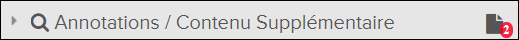

Si un document contient des attachements (comme des suppléments ou des révisions
temporaires), plusieurs indicateurs apparaissent qui permettent affichage des
attachements:
- Si le document contient des pièces jointes avec un type d'alerte
Important, la fenêtre contextuelle
Attachements importantes apparaît avec une liste de
ces pièces jointes.
- Les bannières de notification des attachements disponibles
(cliquez pour afficher) apparaissent en haut du document
dans le contenu volet pour toutes les attachements dont le type d'alerte est
Important ou Normal.
- Lorsque vous faites défiler le document dans le volet de
Contenu, toutes les attachements apportées à des
emplacements spécifiques sont affichées sur le côté gauche du document. Si
le document est rendu au format HTML, les emplacements possibles des
attachements sont des points d'ancrage spécifiques pouvant contenir des
icônes de catégorie de attachement (tels que des suppléments et / ou temporaires révisions). Si le document est un PDF, les
emplacements possibles des attachements sont des pages entières avec une
bannière de notification message lorsque des attachements existent sur une
page.
Remarque : Puisqu'il peut exister trop de catégories de attachements
pour toutes être affichées simultanément dans une emplacement de
l'ancre, seuls ceux avec la priorité d'icône la plus élevée sont
affichés, mais une liste de toutes les attachements à un emplacement
peut être consulté en cliquant sur le groupe d'icônes. Reportez-vous au
Flatirons
Pinpoint Configuration Guide, Section
"Configuration des types de catégories de attachements".
- L'onglet
Attachements
sur le côté droit de la page est jaune lorsqu'il y a des attachements à
l'actuel document. Le nombre de pattachements est indiqué entre parenthèses
sur l'étiquette de l'onglet
Attachements.
- L'icône
Nombre de contenus supplémentaires apparaît à droite
des annotations / supplémentaires Titre de l'en-tête
du contenu. Le numéro en bas à droite de l'icône
Nombre de contenus supplémentaires indique le nombre
de attachements dans la publication entière. Voici un exemple de l'en-tête
avec l'icône:

Remarque : Vous pouvez également rechercher des attachements dans plusieurs documents.
Reportez-vous à la page
Rechercher des Attachements.
Pour afficher les attachements, procédez comme suit:
La attachement apparaît sous la forme d'un nouvel onglet dans la page
Contenu. En le visualisant, vous pouvez revenir au contenu
parent en en cliquant sur l'onglet applicable sous l'en-tête de Contenu ou l'icône
de Contenu parent (si
disponible) dans le Contenu entête.